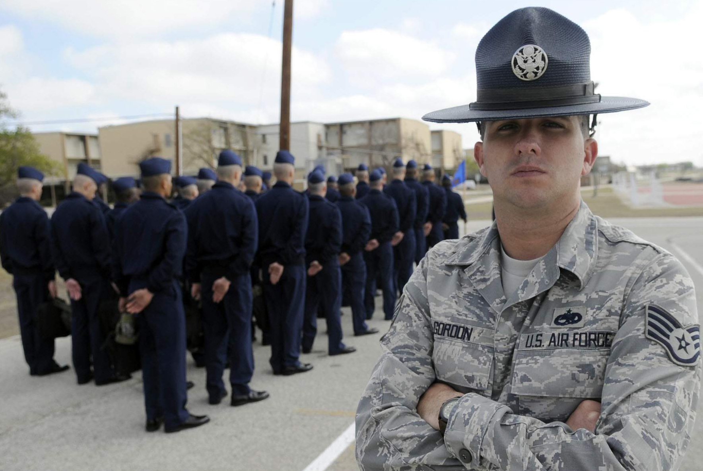
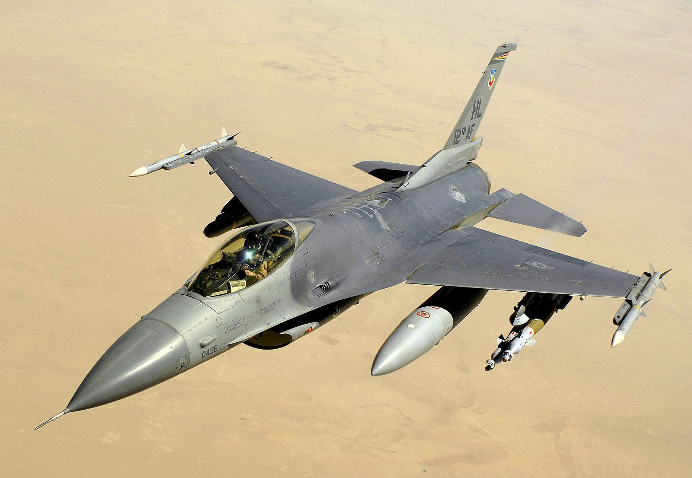
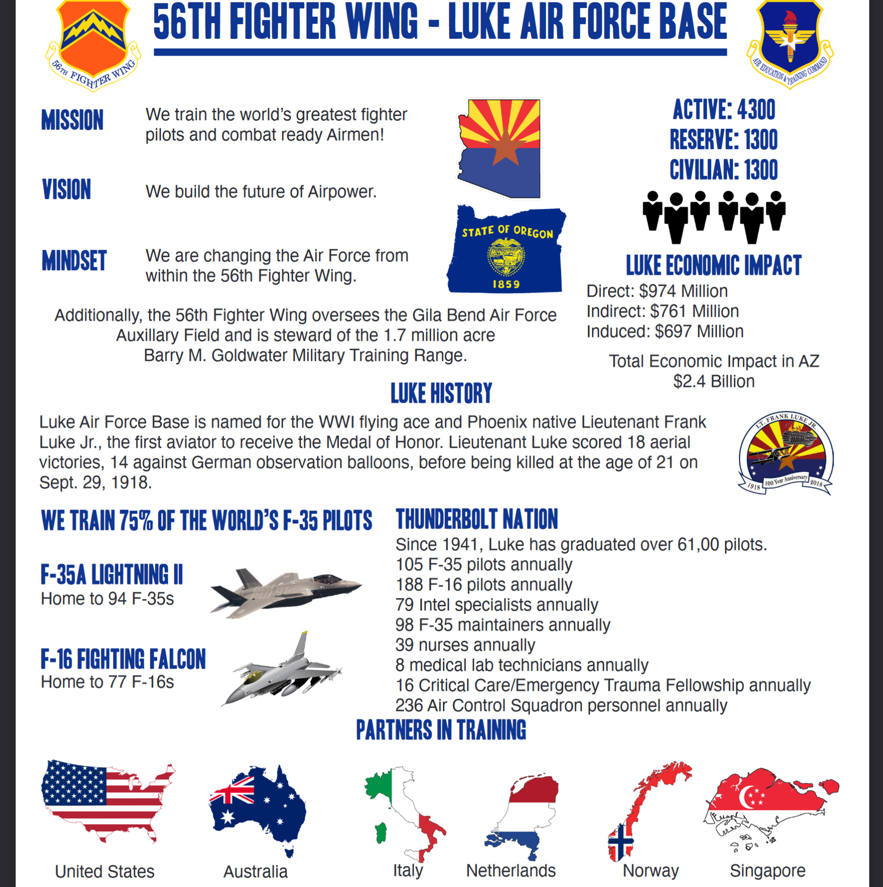
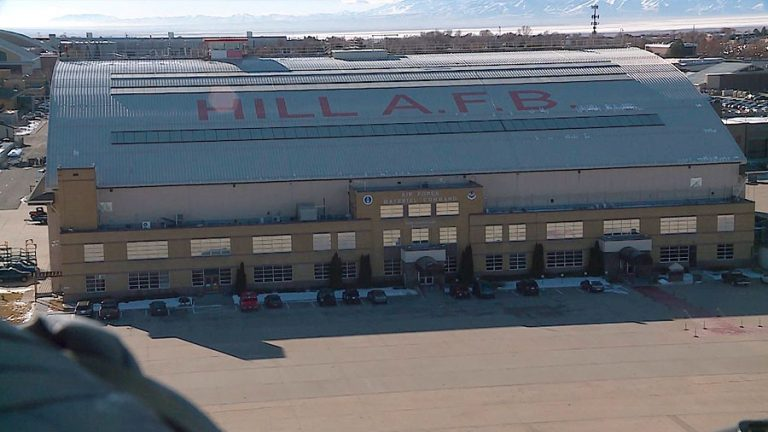
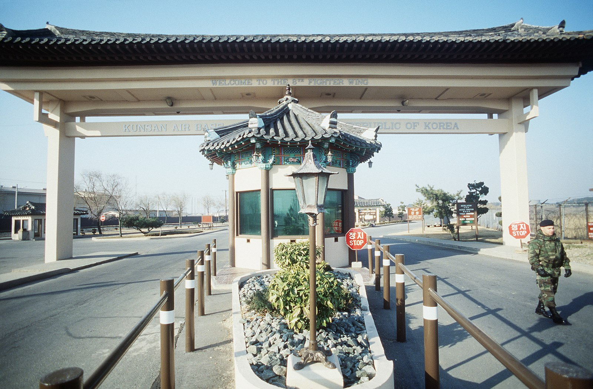
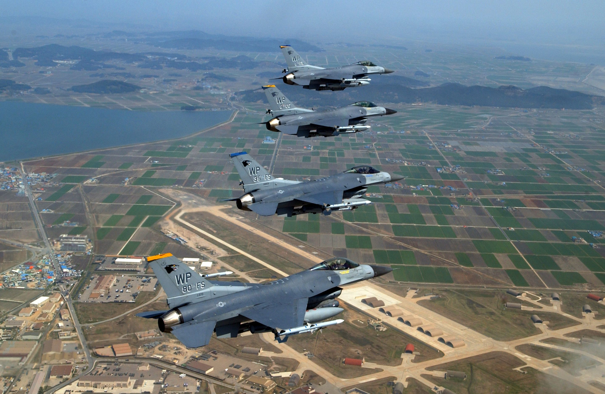
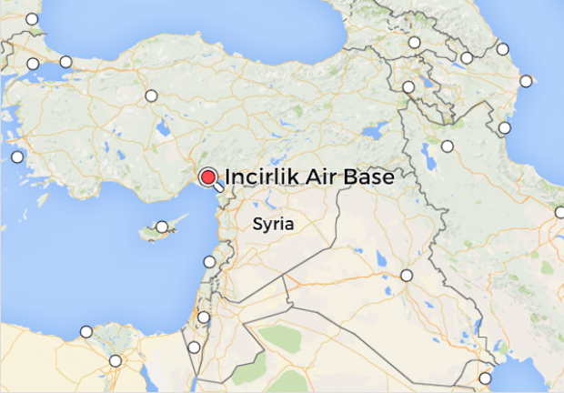
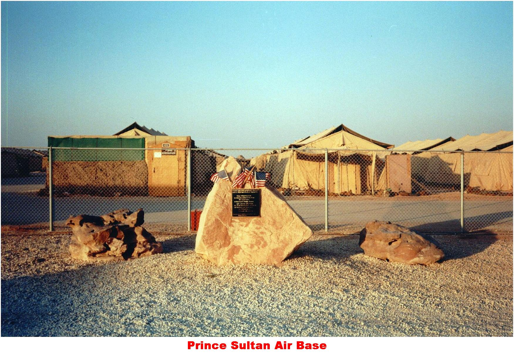

Lackland Air Force, TX
Joint Base San Antonio-Lackland serves as the “Gateway” for many Air Force careers. Air Force Basic Military Training (BMT) is the main reason for the moniker, and the installation’s primary mission is training. In 1941, Lackland AFB began as a small parcel of land carved out of Kelly Field, a nearby Army airfield. Kelly Field (later Kelly Air Force Base) has since closed, and the Kelly Field Annex now belongs to JBSA-Lackland. In 2010, the Base Realignment and Closure (BRAC) commission combined Lackland AFB, Randolph AFB, and Fort Sam Houston, forming Joint Base San Antonio.
I was there for 8 weeks, July through September. It was so hot it was like having a picnic on the sun. I will never forget this place.
Sheppard Air Force Base, TX
Sheppard Air Force Base is a United States Air Force base located in Wichita Falls, in Wichita County, Texas. It is the largest and most diversified training center in Air Education and Training Command. The base is named in honor of Texas Senator John Morris Sheppard, a supporter of military preparations before WWII. Sheppard has been providing instruction in Air Force specialties for more than half a century. Though the mission has changed several times, Sheppard has always been in the training business since it was officially opened as an active Army Air Corps base in October 1941.
This is where I trained to become a Tactical Aircraft Maintenance Technician. I spent 6 months here working on static F-16 aircraft.
Luke Air Force Base, AZ
Luke Air Force Base is named for the first aviator to be awarded the Medal of Honor – 2nd Lt Frank Luke Jr. Luke’s 56th Fighter Wing was first activated on January 15, 1941, as the 56th Pursuit Group. The 56th left for England January 6, 1943. During the following two years, pilots of the 56th destroyed more enemy planes and listed more aces than any other Army Air Force group in the 8th Air Force, including the top two aces in Europe. The mission of Luke AFB is to train the world’s greatest F-16 fighter pilots and maintainers, while deploying mission ready warfighters.
Luke is where pilots and maintenance technicians go to train on real working aircraft. Pretty much everything I learned in school forget it. This is where some crusty sergeant showed you how it was really done.
Hill Air Force Base, UT
Hill Air Force Base is a major U.S. Air Force base located in northern Utah, just south of the city of Ogden, and near the towns of Layton, Clearfield, Riverdale, Roy, and Sunset. It is about 30 miles (48 km) north of Salt Lake City. The base was named in honor of Major Ployer Peter Hill of the U.S. Army Air Corps, who died test-flying NX13372, the original Model 299 prototype of the B-17 Flying Fortress bomber. As of 2018 Hill AFB is the sixth-largest employer in the state of Utah.[3] Hill AFB is the home of the Air Force Materiel Command's (AFMC) Ogden Air Logistics Complex which is the worldwide manager for a wide range of aircraft, engines, missiles, software, avionics, and accessories components. The Ogden Air Logistics Complex is part of the Air Force Sustainment Center.
Hill AFB was my first permenant duty station. From here I traveled the world going to many temporary duty stations. Some of the places include Guam, the Azores, Singapore, Spain, and various places in Southwest Asia. Hill AFB is also home to an extraordinary air museum. Definately worth your time if you are ever in the area.
Kunsan Air Force Base, South Korea
Kunsan Air Base, Republic of Korea, is home to the 8th Fighter Wing, known as the "Wolf Pack." Located seven miles west of Gunsan City, the base is on the west coast of the peninsula near the Kum River estuary. The 8th Fighter Wing is the base's host unit and is assigned to Seventh Air Force at Osan Air Base, Republic of Korea. The numbered Air Force falls under Pacific Air Forces headquartered at Hickam Air Force Base, Hawaii. The base is known as one of the Air Force's last "warrior bases," and an assignment to the installation is typically a one-year unaccompanied tour. This means members are assigned to the base without their families. All military members live on base in dormitories.
 I spent one year here. It was not a very nice base. Although the facilities were ancient, the scenary made up for it. I did a lot of sight seeing and traveling while there.
Incirlik Air Base, Turkey
Incirlik Air Base is one of the major strategically located US military bases. The base is in Turkey, which means that it is operated by both the US and the Turkish governments, unlike other co-bases. Most other military installations are operated by the US government, but under the regulation of the hosting government. Things are different here. The base is only 8 km away from Ardana, the fifth most important city in Turkey and the largest one in the southern part of the country. It is also around 50 km from the Mediterranean Sea, close to the Middle East. The population is mostly American – over 5000 troops. However, the base also hosts a few hundred British and Turkish soldiers.
This was another fascinating place to visit. There is a rich history and plenty of historical and biblical sites to visit. This was probably one of my best temporary duty assignments.
Prince Sultan Air Base, Saudi Arabia
Prince Sultan Air Base (PSAB) is an active United States Air Force Air Expeditionary Base operating in Saudi Arabia and assigned to the U.S. Air Forces Central Command. It was pretty much in the middle of an unihabeted desert. Need I say more?
